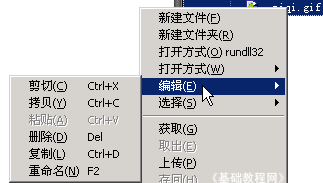
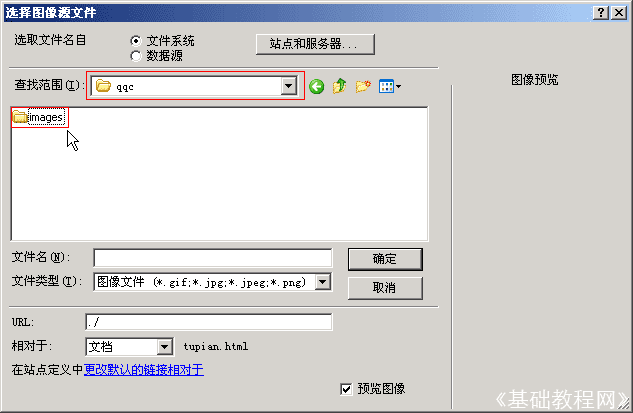

Dreamweaver 8 基础入门教程
四、插入图片 返回
网页中除了文字以外，往往还有一些漂亮的图片，在Dreamweaver中如何插入图片呢？下面我们通过一个练习来学习；
1、启动Dreamweaver
1）点击“开始－所有程序－Macromedia－Macromedia Dreamweaver 8”， ；
；
2）在中间的“创建新项目”中点第一个 HTML，打开一个空白文档，把标题改为“插入图片”；

3）点“文件－保存”命令，以 tupian 为文件名保存文件，保存位置在建立的站点中；
2、插入图片
1）在右边的侧边栏中间，在文件面板中找到“站点－青青草”，瞄准敲右键，选“新建文件夹”命令，新建一个名为 images 的文件夹；
2）这个images 文件夹主要用来放图片的，把要用的图片复制到这个文件夹中，也可以直接拖进去，图片的文件名必须是英文的；
在右键菜单里有个“编辑”菜单，这里面有“拷贝、粘贴、删除、重命名”等命令；

3）点常用工具栏中间的“插入图像”按钮，出现一个“选择图片”对话框，中间有一个文件夹images

注意上面的“查找范围”应该是站点的文件夹，中间是images文件夹，打开它，选择刚才复制进去的图片，点“确定”即可；

如果插入的图片不在站点内，会出来一个复制的提示，这时候点“是”就可以了；
4）保存一下文件，点预览按钮，看一下图片的效果；
另外一种更简单的方法是，直接把右边站点里的图片拖到页面中，要插图片的位置，也可以插入图片；
本节学习了插入图片的基本方法，注意要把图片放到站点的images文件夹中，而且图片是英文的文件名，如果你成功地理解并完成了练习，请继续学习下一课内容；
本教程由86团学校TeliuTe制作|著作权所有
基础教程网：http://teliute.org/
美丽的校园……
转载和引用本站内容，请保留作者和本站链接。